Technische Angaben
| Einstellung | Wert |
|---|---|
| Gateway | vpn.hsr.ch |
| Benutzername | mmuster |
| Benutzerpasswort | GeHeim007 |
| Gruppenname | hsrremote |
| Gruppenpasswort | hsrremote |
VPN unter Ubuntu einrichten
Hinweis: Richte das VPN nicht im HSR-Secure-WLAN ein - aus dem HSR-Netz können keine VPN-Verbindungen hergestellt werden.
- Benötigte Abhängigkeiten installieren
Bevor du loslegen kannst, musst du noch das Paketnetwork-manager-vpnc-gnomeinstallieren. Jetzt installieren - Öffne die Netzwerkeinstellungen über den Netzwerkindikatoren am oberen linken Bildschirmrand via
VPN-Verbindungen+VPN konfigurieren...
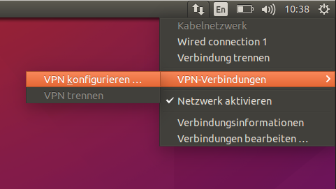 - Klick auf den Button Hinzufügen
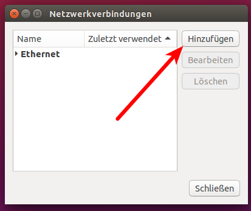 - Wähle in der Liste den Eintrag Cisco-kompatibler VPN-Client (vpnc) aus
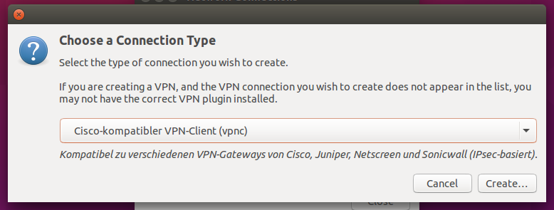 - Weiter geht's mit einem Klick auf Erzeugen...
- VPN Einstellungen eintragen - natürlich mit eigenem Benutzernamen & Passwort
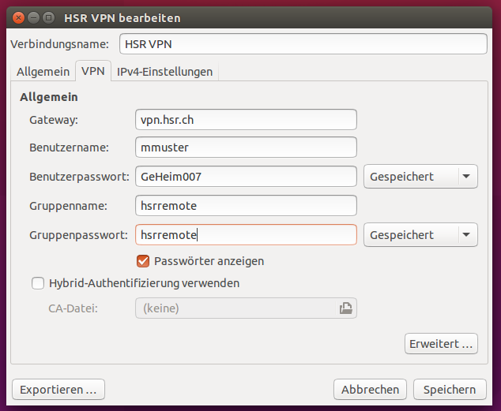
Es sind keine erweiterten Einstellungen und Konfigurationen in anderen Tabs erforderlich. - Speichern mit Klick auf Speichern. Der neue Eintrag erscheint nun in der Liste
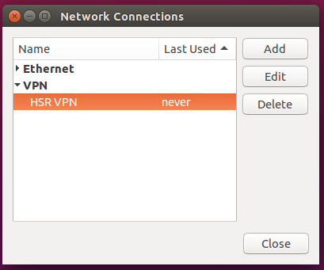 - Verbindung über den Netzwerkindikatoren am oberen linken Bildschirmrand via
VPN-Verbindungen+HSR VPNherstellen
{kind=link}
{kind=link}
{kind=link}
{kind=link}
{kind=link}
{kind=link}
{kind=link}
VPN unter macOS einrichten
- Öffne die Netzwerkeinstellungen und klicke unten links auf das Plus
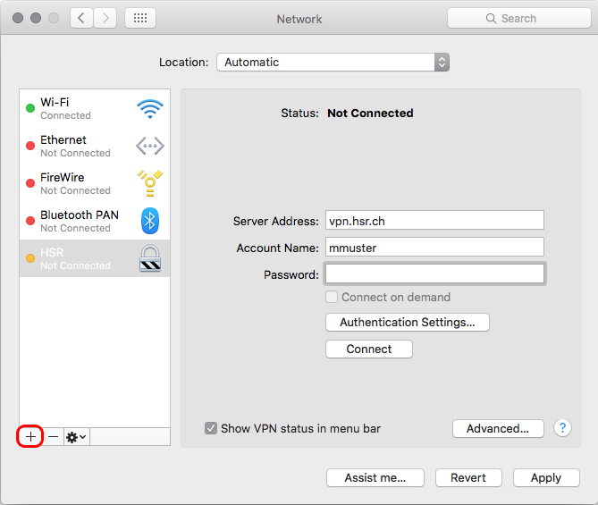 - Wähle
VPN,Cisco IPSecund wähle einen Verbindungsnamen. Klicke anschliessend auf Erstellen.
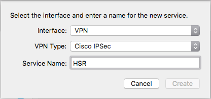 - Gib rechts die Serverdaten ein - natürlich mit eigenem Benutzernamen. Das Passwort kann leer gelassen werden.
Klicke auf Authentifizierungseinstellungen. 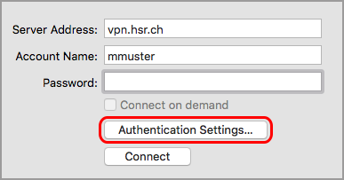 - Gib
hsrremoteals Schlüssel und Gruppenname ein
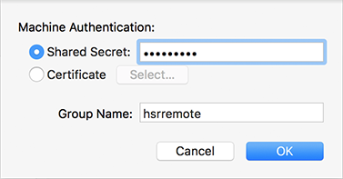 - Optional kannst du das Häckchen setzen bei
VPN in der Menüleiste anzeigen. Damit erscheint ein praktisches Icon in der Statusbar, zum schnellen An- und Abmelden.
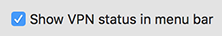
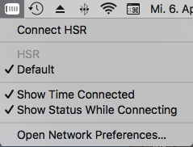 - Nun kannst du dich mit deinem HSR Login anmelden.
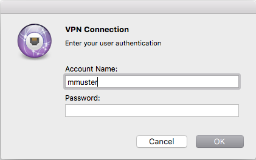
{kind=link}
{kind=link}
{kind=link}
{kind=link}
{kind=link}
{kind=link}
{kind=link}
VPN einrichten unter anderen Linux Distributionen
Arch Linux
Die Einrichtung via Netzwerk-Manager erfolgt analog zu Ubuntu. Als Abhängigkeit wird das Paket networkmanager-vpnc benötigt, welches sich im extra Repository befindet.
pacman -S networkmanager-vpnc
Fedora
Die Einrichtung via Netzwerk-Manager erfolgt analog zu Ubuntu.
Die Abhängigkeit (Paket NetworkManager-vpnc) sollte bereits vorinstalliert sein.